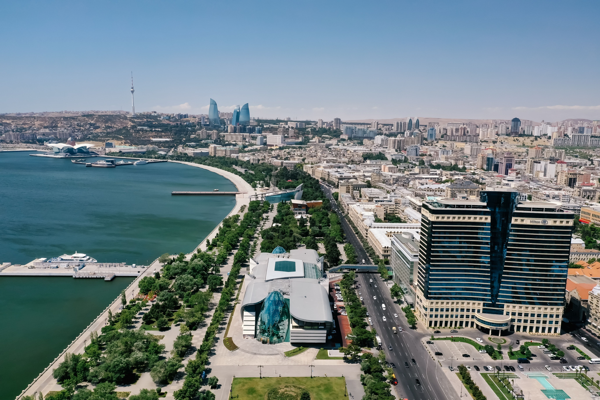

O Grande Prêmio do Azerbaijão de Fórmula 1 reúne algumas das características mais interessantes do automobilismo moderno: velocidades elevadas, disputas por posição, exigência técnica e um cenário urbano que mistura construções históricas com a arquitetura contemporânea de Baku.
A capital do Azerbaijão recebe novamente a principal categoria do automobilismo mundial. A etapa marca dez anos da estreia da Fórmula 1 na cidade, que recebeu sua primeira corrida em 2016, ainda sob o nome de GP da Europa.
A edição de 2026 também apresenta uma particularidade no calendário. Diferentemente do formato tradicional, a prova principal será realizada no sábado, 26 de setembro, às 8h, pelo horário de Brasília.
A mudança está relacionada ao Dia da Memória do Azerbaijão, celebrado em 27 de setembro, data nacional dedicada à lembrança dos mortos no conflito de Nagorno-Karabakh em 2020. Para respeitar a ocasião, a organização antecipou toda a programação do Grande Prêmio em um dia.
Como está a disputa pelo título Mundial
A Fórmula 1 chega a Baku depois de 14 etapas disputadas na temporada de 2026. O italiano Andrea Kimi Antonelli lidera o Mundial de Pilotos, enquanto a Mercedes ocupa a primeira posição no campeonato de construtores.
Antonelli soma oito vitórias em Grandes Prêmios, construindo uma vantagem de 81 pontos sobre seu companheiro George Russell. O desempenho da dupla coloca a Mercedes em posição de destaque na temporada, enquanto Ferrari e McLaren disputam as posições seguintes.
Lewis Hamilton aparece na terceira colocação do Mundial, seguido por Lando Norris e Charles Leclerc. Os três estão separados por apenas 24 pontos, mantendo uma disputa importante pelas primeiras posições da classificação.
Classificação dos cinco primeiros pilotos:
- Kimi Antonelli — Mercedes — 292 pontos
- George Russell — Mercedes — 211 pontos
- Lewis Hamilton — Ferrari — 191 pontos
- Lando Norris — McLaren — 186 pontos
- Charles Leclerc — Ferrari — 167 pontos
Os pilotos chegam para essa corrida depois do Grande Prêmio da Espanha, disputado em 13 de setembro de 2026, no circuito Madring, em Madrid.
Kimi Antonelli conquistou a vitória pela Mercedes, com Max Verstappen terminando na segunda colocação e Lando Norris completando o pódio.
O resultado ampliou a vantagem de Antonelli na liderança do campeonato e marcou sua oitava vitória na temporada. O italiano também havia vencido os Grandes Prêmios da China, Japão, Miami, Canadá, Mônaco, Bélgica e Itália.
Para Gabriel Bortoleto, a etapa espanhola terminou com a 13ª colocação. O brasileiro chega ao Azerbaijão ocupando o 14º lugar no Mundial de Pilotos, com dez pontos conquistados pela Audi.
Com o campeonato entrando em sua reta final, cada etapa representa uma oportunidade para os pilotos ampliarem suas pontuações, diminuírem diferenças ou consolidarem posições no Mundial.
GP do Azerbaijão 2026: programação e horários
A divulgação oficial estabelece três sessões de treinos livres, uma classificação e a corrida principal. Não haverá prova sprint nesta edição.
Confira a programação, já com os horários de Brasília:
Quinta-feira, 24 de setembro
- Treino livre 1: 5h30 às 6h30
- Treino livre 2: 9h às 10h
Sexta-feira, 25 de setembro
- Treino livre 3: 5h30 às 6h30
- Classificação: 9h às 10h
Sábado, 26 de setembro
- Grande Prêmio do Azerbaijão: 8h
A corrida está programada para 51 voltas, totalizando 306,049 quilômetros.
Terá transmissão ao vivo pelo sportv3, que exibirá todas as atividades da Fórmula 1 em Baku, incluindo os três treinos livres, a classificação e a corrida principal.
Baku City Circuit: o circuito que mistura velocidade e precisão
Localizado na capital do Azerbaijão, às margens do Mar Cáspio, o circuito utiliza ruas da cidade e passa por construções históricas, avenidas largas e regiões modernas de Baku.
Sua configuração cria um desafio pouco comum: os pilotos precisam encontrar velocidade suficiente para explorar uma das maiores retas do calendário, mas também devem manter precisão absoluta em trechos onde praticamente não existe margem para erro.
A reta de aproximadamente 2,2 quilômetros ao longo da região costeira é um dos elementos que definem a personalidade do circuito. Nela, os carros conseguem atingir velocidades elevadas antes de uma forte desaceleração para a primeira curva.
Em contraste, a passagem pelo centro histórico de Icheri Sheher, especialmente entre as curvas 8 e 10, exige controle e precisão. A pista se estreita junto às muralhas da cidade antiga, criando um dos trechos visualmente mais marcantes do campeonato.
A combinação de retas extensas, freadas fortes e barreiras próximas transforma Baku em um desafio diferente para pilotos e engenheiros.
As equipes precisam encontrar um equilíbrio aerodinâmico delicado.
Uma configuração com menor resistência ao ar favorece a velocidade nas retas, mas pode comprometer o desempenho nas curvas mais lentas. Por outro lado, utilizar maior pressão aerodinâmica melhora a estabilidade nas regiões técnicas, mas pode representar perda de velocidade nos trechos de aceleração prolongada.
Esse compromisso ajuda a explicar por que um carro competitivo em determinado setor pode apresentar dificuldades em outra parte da volta.
A característica também diferencia Baku de outros circuitos urbanos tradicionais, como o Grande Prêmio de Mônaco, outro desafio histórico da Fórmula 1 disputado nas ruas de uma cidade.
Enquanto Mônaco é conhecido pela dificuldade de ultrapassagem, Baku oferece uma reta que favorece disputas diretas antes da primeira curva.
Entretanto, a oportunidade de ultrapassar não elimina os riscos. Um erro na freada, uma aproximação excessiva do muro ou um contato entre competidores pode mudar completamente o cenário de uma corrida.
O que muda em Baku com o regulamento de 2026
A edição deste ano acrescenta um elemento técnico importante à identidade do GP do Azerbaijão.
O novo regulamento da Fórmula 1 introduziu mudanças significativas nas unidades de potência, na aerodinâmica e nos mecanismos utilizados pelos pilotos para atacar e defender posições.
Uma das principais novidades é o Overtake Mode, recurso que substitui o DRS como sistema de auxílio às ultrapassagens.
Quando um piloto está a menos de um segundo do adversário no ponto de detecção estabelecido, ele pode acessar um perfil adicional de potência elétrica na volta seguinte.
O regulamento também introduziu a aerodinâmica ativa, permitindo ajustes nos elementos das asas dianteira e traseira em condições específicas da pista.
Em Baku, a gestão da energia elétrica ganha importância especial por causa da longa reta principal.
A capacidade de distribuir a energia disponível entre os setores pode influenciar tanto as tentativas de ultrapassagem quanto a defesa de posições.
A história do GP do Azerbaijão na Fórmula 1
A estreia aconteceu em 2016, quando o circuito recebeu o Grande Prêmio da Europa.
Nico Rosberg venceu aquela corrida pela Mercedes, depois de conquistar a pole position e liderou todas as voltas.
No ano seguinte, a prova passou a receber oficialmente o nome de Grande Prêmio do Azerbaijão.
A mudança coincidiu com uma corrida que ajudaria a estabelecer a reputação do circuito.
Em 2017, Daniel Ricciardo conquistou a vitória depois de largar na décima posição. A corrida ficou marcada por incidentes, intervenções do safety car e pelo confronto entre Sebastian Vettel e Lewis Hamilton.
Lance Stroll também entrou para a história daquela edição ao terminar em terceiro lugar com a Williams.
Em 2018, outro episódio reforçou o caráter imprevisível da etapa. Valtteri Bottas caminhava para a vitória quando sofreu um problema no pneu nas voltas finais, permitindo que Lewis Hamilton herdasse a liderança e conquistasse o triunfo.
Aquela corrida também ficou marcada pela colisão entre os companheiros de Red Bull Daniel Ricciardo e Max Verstappen.
Entre os pilotos que construíram uma história importante no circuito, Sergio Pérez merece destaque.
O mexicano conquistou duas vitórias no Grande Prêmio do Azerbaijão, em 2021 e 2023, ambas pela Red Bull.
A primeira aconteceu em uma prova que teve problemas nos pneus de Max Verstappen e Lance Stroll, além de um erro de Lewis Hamilton na relargada.
Em 2023, Pérez voltou a vencer em Baku, superando Verstappen e Charles Leclerc.
A combinação entre velocidade nas retas, controle dos pneus e capacidade de aproveitar as oportunidades ajudou o mexicano a construir uma relação especial com o traçado.
Em 2025, Max Verstappen conquistou a vitória pela Red Bull, depois de largar na pole position, liderar todas as voltas e registrar a volta mais rápida.
George Russell terminou em segundo lugar, enquanto Carlos Sainz levou a Williams ao terceiro lugar.
O resultado do espanhol foi especialmente significativo para a equipe britânica, que voltou ao pódio com o piloto em sua primeira temporada pela escuderia.
Esses episódios ajudam a explicar como Baku se consolidou no calendário: um circuito onde velocidade, estratégia e execução podem transformar completamente o resultado.
Para o público brasileiro, a etapa também representa mais uma oportunidade de acompanhar Gabriel Bortoleto na Fórmula 1.
O piloto paulista disputa a temporada de 2026 pela Audi, ao lado do alemão Nico Hülkenberg.
Campeão da Fórmula 3 em 2023 e da Fórmula 2 em 2024, Bortoleto chegou à Fórmula 1 em 2025, pela Sauber, antes da transformação da equipe na operação de fábrica da Audi.
Sua participação em Baku acrescenta um elemento de interesse nacional ao fim de semana, especialmente pelas características do circuito.
O GP do Azerbaijão e sua importância no calendário
Desde 2016, Baku construiu uma identidade própria dentro da principal categoria do automobilismo.
A presença das muralhas históricas, a proximidade com o Mar Cáspio e a combinação de setores técnicos com retas extensas fazem do Grande Prêmio do Azerbaijão uma etapa reconhecível tanto pelo cenário quanto pelas características esportivas.
Em 2026, o circuito completa dez anos desde sua estreia na Fórmula 1 e recebe mais uma corrida em um período importante da temporada.
Mais do que uma corrida urbana, o GP do Azerbaijão representa um encontro entre engenharia, velocidade e precisão.
Em Baku, a proximidade dos muros exige respeito, a reta principal oferece oportunidades e a história mostra que uma corrida pode mudar rapidamente.
É essa combinação que sustenta a identidade do circuito e mantém o GP entre os eventos mais interessantes do calendário da Fórmula 1.